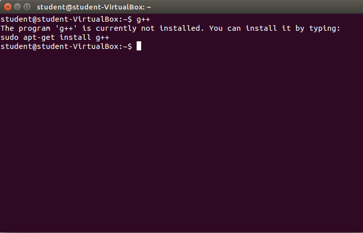
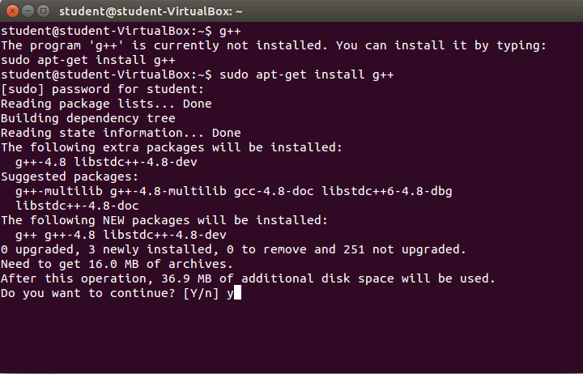
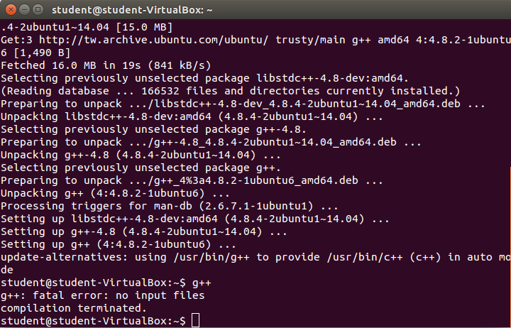
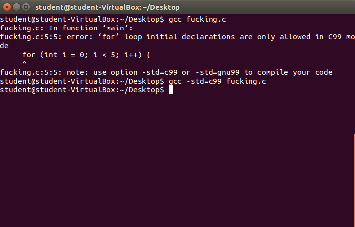
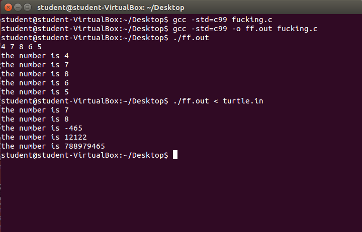

要如何用C/C++語言撰寫程式碼、gcc/g++編譯、命令列執行程式
架設開發環境
C和C++有什麼不同？要用C還是C++？
有什麼不同，網路上一堆資料…。不過我就簡單講幾句就好。C比C++早發明、C的語法可以用於C++(基本上啦)，C++則不能完全用於C，C和C++語言都有很多種版本(些微差距，或者說很多種標準)，例如C的C99是比較新的，C++的C11也蠻新的，越新的一般來說功能就越強大，但是也越雜。C++的程式一般來說比較容易做出物件導向(object-oriented)的程式設計，但功能比C多的代價是，程式碼不小心就會比較亂。自己看需求囉~團隊用什麼自己就用什麼。基本上C++功能比較多比較好用啦，但是C的語法比較容易學得完啦。如果先學C，會對硬體的了解比較多，如果先學C++，會對程式架構了解比較多，都好，都學，都可以學。
至於開發環境呢，C和C++的開發環境都裝，都可以裝。
用C/C++寫程式呢，需要文字編輯器搞出程式碼，再用 編譯器編譯(就是把程式碼變成可以執行的程式) 然後其實基本上所有高階語言都是這樣搞(組合語言的則是叫做組譯器，概念上差不多，不過因為它比較接近機械碼，算是一種半成品)。因此，我們需要文字編輯器跟C編譯器(如果你要用C寫程式)或C++編譯器(如果你要用C/C++寫程式)。(其實還需要連結器，但這裡不重要，因為gcc/g++編譯器就會自帶連結器了，不管了), 文字編輯器用什麼下個大標題再說，這裡講怎麼安裝編譯器。
安裝編譯器
C的編譯器用gcc(好像是自由軟體)，C++的編譯器是g++。如果你的作業系統是MS Windows(Microsoft微軟Windows)的話，很不幸，步驟太多，我懶得講，我只附連結[GCC的下載(程式語言教學站)]，及gcc/g++安裝程式備份。
如果你的作業系統是UNIX-like，比如說Mac, linux, FreeBSD, ubuntu，恭喜你，你已經有gcc了，基本上，你如果只想用C寫程式就OK了。那如果想要g++用C++寫程式，安裝方法也很簡單。直接在命令列打
sudo apt-get install g++，然後依照指示安裝。怎麼確定有沒有裝呢，直接打g++就好了。可是…在Debian下，Debian的安裝包好像已經壞掉了，打apt-get g++沒用。所以解決方法為，先裝這兩個.deb檔案g++-4.9_4.9.2-10_i386.deb跟libstdc++-4.9-dev_4.9.2-10_i386.deb(不同硬體請自己上網找不同版本)，安裝是有順序的(程式相依性)，必須先移至檔案所在的目錄下(或者不必移至該目錄下，但路徑名稱不論是相對路徑或絕對路徑都要打清楚)(需要root權限)打
sudo dpkg -i libstdc++-4.9-dev_4.9.2-10_i386.deb再打sudo dpkg -i g++-4.9_4.9.2-10_i386.deb然後裝完此安裝包後就可使用，編譯指令請打g++-4.9，而不要打g++。沒裝

正在裝

裝好了

撰寫程式
打開文字編輯器
Windows 上就開記事本吧，不要開什麼word，覺得記事本太難用，沒有自動縮排(就是開新行時自動多空2格或4格或對齊，沒有Syntax(就是比如說C語言裡的資料型態名稱，變數名稱，註解，字串，自動以不同顏色顯示)，就換別的。比如說Dev Cpp Codeblocks Visual C++，不過為了怕你偷懶用他們的編譯器，我希望你只要用它來打程式碼就好了，還是照樣用gcc編譯。不然也可以用Notepad++這個真的是編輯器喔，不過功能超強大，還有Syntax喔。那如果是UNIX-like系統呢，你可以用vim拉，但是如果不熟的人就會和我一樣超智障超沒效率，我都用ubuntu內建的gedit，用emacs或sublime這兩個互為死對頭的也可以(vim, emacs, sublime都不是內建，需要手動安裝)。
其它系統呢，ㄏㄏ我不知道，不要問我，我當初就不是這樣搞出來的。
打程式碼
…這部分請自行學習C語言程式設計，英文叫做C programming。
如果寫程式要好看，易讀，可以嘗試建立自己的風格，不過如果採用大家統一的風格，別人就會比較好讀。阿這裡有Google C++ Style Guide，故名思義就是告訴你C++的一種風格，nasa c style guide(C語言)nasa c style guide備份, 可以試試看照著它寫，但覺得太麻煩的話也就算了不要幹了，沒關係，反正程式自己寫爽就好ㄌ何必這麼累呢。
但是，如果寫得太亂，不僅殘害他人，還有可能以後連自己都看不懂(呃，其實自已以後都看不懂也頗正常)…所以到底要不要採用呢？看人囉。
我強烈建議，整個程式的風格要一致，例如縮排空幾格等等，何時空格，變數命名風格(例如，小駝峰式命法(lower camel case，像是getNewVariable))，註解位置，函式名用動詞還是名詞…。然後在寫C++程式的時候，盡量C++和C風格不要混用(例如，不要malloc跟new混用，printf跟cout混用)，不過不得已的時候(想要實現的功能混用才能做到或比較簡潔)還是可以混用啦，基本上，C/C++混用就是C++，因為你編譯器只能用C++…。
喔對了，講一下命令列參數
int main(int argc, char* argv[])
int main()
前者有括號裡有兩個參數的就可以接收命令列參數，第一個argc是參數的數量，第二個argv是一堆字串。C語言的字串就是一直讀記憶體直到讀到跳脫字元'\0'(其實它的值是0, 你寫0也會過，但程式碼讀起來意義不同)就會不讀，阿阿阿我好像講太多了，說好的不教程式呢？後者的那個寫法當然接收不到了阿。寫完之後，如果用C寫，你應該存成.c檔，也就是副檔名為.c的檔案；如果用C++寫，C++有好幾種副檔名(wikipedia)，歷史上跟現在累積起來因素告成的，現在通常UNIX-like系統會用.cc(.cpp好像也有？)，不是UNIX-like系統會用.cpp(stackoverflow)。當然，如果你副檔名不是這樣打，有些編譯器還是會接受，不過怕混淆，還是不要亂命名好了。
除錯是啥
傳說起源是一開始發明電腦是用真空管，會引來昆蟲卡住讓機器失靈，因此要人工除蟲，把蟲拿掉。後來引申為改正程式裡的錯誤。有一種智障但有效的方法叫做小黄鸭调试法（Rubber Duck Debugging）。編譯程式碼
非常簡單。開命令列，程式是gcc或g++，編譯器選項就是其命令列參數。那麼這些選項要怎麼用呢，自己上網搜 gcc options(可參考官方網站)，但是我只提幾個我覺得重要的東西。
想要編譯用C寫的 test.c，打
gcc test.c就好。想要編譯用C寫的 test.cpp，就打
g++ test.cpp。如果你是在windows上編譯，它會跑出a.exe，如果你是在linux上編譯，它會跑出a.out。
要改輸出檔檔名就加
-o [filename]就好。舊的C語言因為for迴圈裡不能初始化變數，用gcc編譯時出現問題，此時加-std=c99或者-std=gnu99就好。

其他的就自己上網查囉！
執行程式
我的程式怎麼都只能在命令列執行
喔喔，你想弄的那個東西叫做視窗程式，那個跟作業系統有關，windows跟linux的不一樣。命令列跑出來的東西是stdout, stderr, stdin(跑進命令列的)，此處沒有講得很完整，關於stdout stderr stdin是什麼，請上網查。那有一些視窗程式的函式庫(library)是可以跨平台(cross-platform)的，亦即你在不同系統，你都不用改程式碼，跟系統有關的程式碼，都集中在函式庫裡了，只要引入它就好，編譯器會幫你搞定。例如openGL(這個還可以選擇讓顯示卡進行圖形運算)。視窗程式事實上做法一樣，還是一堆程式碼，也可以用gcc搞出來的，並沒有什麼神奇的方法。不過，什麼visual c++的好處就是你可以很直覺地(位置就用拖曳的，而不是打坐標)操作windows api所提供的元件(按鈕，輸入框等)。
對了，順道一提，有些程式有兩種版本，命令列版本和視窗版本，這樣的話，功能可以分開，程式碼比較好管理，或者命令列是除錯(debug)用。
那就在命令列執行
在 linux下，你打的是./[EXECUTABLE FILE FILENAME]就可以執行，在windows下，直接打[EXECUTABLE FILE FILENAME]即可。這個範例中，ff.out可以從stdin讀五個整數，並印出以下訊息。當然，你可以直接在命令列輸入(也就是按鍵盤去進行stdin標準輸入)，但如果標準輸入很多，你又不想一個一個打，那麼，就在後面加
< [INPUT FILE FILENAME](有沒有空格不重要，輸入檔的副檔名不重要)，把檔案作為標準輸入，而把你要的標準輸入用文字模式存在檔案裡就好(開文字編譯器打進去，你就把它 想成一個.txt檔好了)。
筆記
筆記20160125_1
假設你在fuck.c裡寫了#include "fuck.h"
int ggg() { return 1; }(fuck.h的內容不重要)編譯時如果打
gcc -c fuck.c就會出現error: conflicting types for ‘ggg’
note: previous declaration of ‘ggg’ was here但如果把第一行改成別的檔案，就一定不會有問題==
原來是要C99，所以打
gcc -std=c99 -c fuck.c就沒有問題安全產生fuck.o
註：
>gcc --help
-c Compile and assemble, but do not link
筆記20160125_2
平常編譯的時候，打main.c file1.c file2.c會將三個檔案分別編譯產生.o檔後連結成一個程式。那如果有些檔案不想重新編譯怎麼辦？假設你只有改file1.c，其它兩個檔案不會有改動。那麼可以這樣子代替原本的指令：
gcc -c main.c file2.cgcc file1.c file2.o main.o筆記20160125_3
.gch檔怎麼來？解：參考How to make GCC not generate .h.gch files
對標頭檔編譯
gcc myheader.h所產生的。筆記20160125_4
-IfolderA 代表標頭檔的引入要從根目錄/folderA下開始找預設就已經有
-I.了，編譯器本來就會在根目錄下尋，所以其實可以不用打-IfolderA -IfolderB 代表都可能從 根目錄/folderA 根目錄如果是同名檔案!?好像不會include兩次，而且跟指令的順序有關。優先順序好像是根目錄>選項1>選項2…詳解請見main.c的註解，或者自己實驗看看。下載
筆記20160212_1
拜託，優化選項(例如-O2)不要亂開，有時候程式會出問題。(當然多數情況下是ok)還有其它問題？
看這些連結囉~連結失效不是我ㄉ錯，至少我那時候連結還在，而且網站又不是我架的wwwcplusplus.com Stack Overflow
Last Update: 2016/2/12